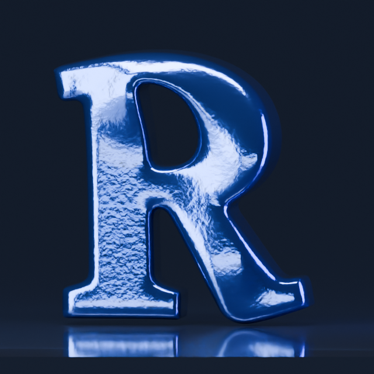
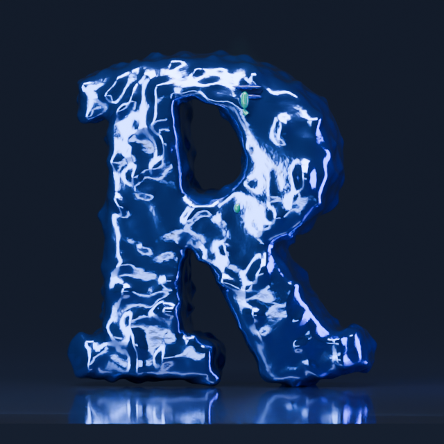
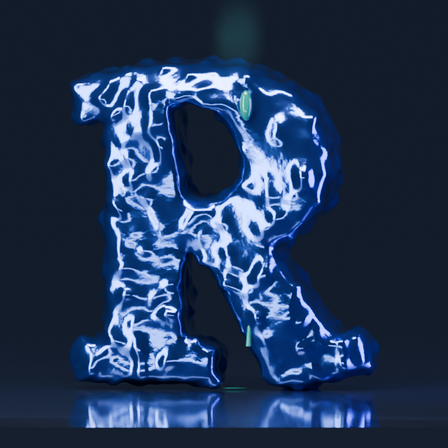
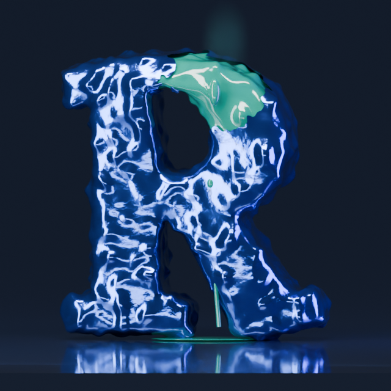
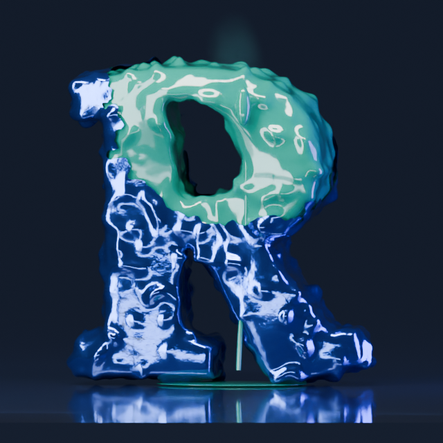
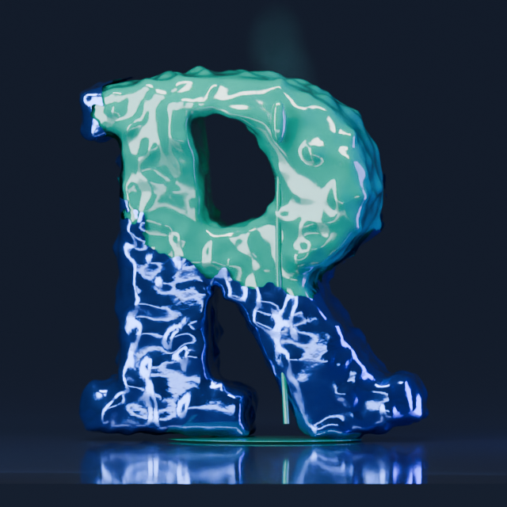

An accelerated Blender motion proposal. The metallic covering boils open; replenishing slime drains continuously from within. The interior stays full. Restrained vapour accompanies the reaction.
This 18-second excerpt shows the onset. Procedural emission continues beyond it in the Blender file. Replaying starts a fresh demonstration. The browser performance and its six-minute buildup have not changed.






Art-directed geometry, shader holes and procedural emission; no physical fluid or chemical solver. Judge the motion, metal/slime distinction and reaction intensity. This is a first visual proposal.